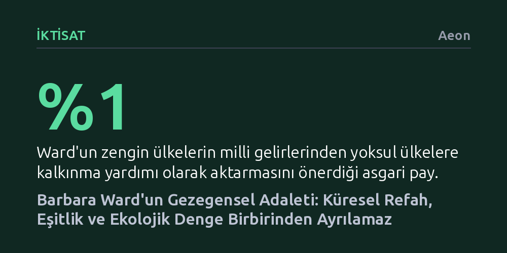

IKTISAT · Aeon · 2026-10-10
İktisatçı Barbara Ward, yoksullukla mücadelenin, ekonomik kalkınmanın ve çevre korumasının birbirinden bağımsız çözülemeyeceğini göstererek sürdürülebilir kalkınma kavramının temellerini atmıştır. Batı merkezli sınırlılıklarına karşın Ward'un gezegensel adalet ve küresel gelir paylaşımı vizyonu, günümüz krizlerine rehberlik etmeyi sürdürüyor.
Ekolojik sürdürülebilirlik ile ekonomik kalkınmanın çatışan hedefler değil, küresel gelir adaleti sağlanmadan çözülemeyecek ayrılmaz bir bütün olduğunu fark ettirir.

1957 yılında Gana, Sahraaltı Afrika'da sömürge yönetiminden kurtularak bağımsızlığını ilan eden ilk ülke olduğunda, dünyanın dikkati bu tarihi dönüşüme çevrilmişti. Ülkenin bağımsızlık önderi Kwame Nkrumah, üniversitenin ilk mezunlarına hitap etmesi için İngiliz iktisatçı ve gazeteci Barbara Ward'u davet etti. Ward bu coğrafyaya yabancı değildi; Volta Barajı projesinde görev alan eşiyle birlikte dört yıldır ülkede yaşıyor, bölgenin iktisadi ve siyasi çalkantılarını yakından izliyordu.
Nkrumah Afrika genelinde sömürgecilik karşıtı egemenliği ve kıtasal birliği savunurken, Ward bu yerel uyanışı küresel bir plana dönüştürdü. Ona göre yeni kurulan devletlerin kaderi yalnızca ulusal egemenlikle çizilemezdi; ekonomik refah, uluslararası dayanışma ve dünya barışı ancak gezegensel ölçekte çözülebilecek ortak meselelerdi. Soğuk Savaş yıllarında kadınların sesinin duyulmadığı uluslararası arenada Ward, hem Birleşmiş Milletler'e hem de dünya liderlerine yön veren etkili bir kamusal entelektüel haline geldi.
Ward'un düşünce dünyasının temel taşı yoksullukla mücadeleydi. İkinci Dünya Savaşı sonrasını insanlık tarihinin en köklü devrimler çağı olarak niteleyen iktisatçı, küresel servet uçurumu kapatılmadıkça kalıcı bir barış kurulamayacağını savunuyordu. Dönemin kalkınma modellerini derinlemesine inceleyen Ward, Batı'nın sömürge kaynaklarını yağmalayarak zenginleştiğini, geride kalan ülkelerde ise kendi kendine büyüme üretemeyen çarpık bir iktisadi yapı bıraktığını açıkça tespit etti.
Bu yapısal adaletsizliği kırmak için Avrupa'yı ayağa kaldıran Marshall Planı modelinin yoksul coğrafyalara da uygulanmasını teklif etti. Zengin devletlerin milli gelirlerinin en az yüzde birini yoksul ülkelere kalkınma yardımı olarak aktarmasını, yerel uzmanların yetiştirilmesini ve adil ticaret şartlarının oluşturulmasını istedi. Ward'a göre bu yardım bir lütuf veya stratejik yatırım değil, Batı'nın ödemesi gereken ahlaki ve iktisadi bir borçtu.
1970'li yıllara gelindiğinde iktisat kuramı derin bir açmazla yüzleşti. Roma Kulübü'nün yayımladığı Büyümenin Sınırları raporu gibi Batılı çalışmalar, tüketim odaklı büyümenin biyosferi tükettiğini savunarak büyümeyi durdurma çağrısı yapıyordu. Buna karşılık sömürge geçmişinden yeni çıkan Küresel Güney ülkeleri, halklarına eğitim, sağlık ve asgari refah sağlayabilmek için ekonomik büyümeye mecbur olduklarını haykırıyordu.
Ward, birbiriyle çatışan bu iki cephe arasında özgün bir denge kurdu. Batılı meslektaşlarının felaket tellallığına prim vermedi; yoksulluk tuzağından çıkmak için kalkınmanın zorunlu olduğunu, ancak doğayı tüketmeyen yeni yöntemler geliştirilmesi gerektiğini öne sürdü. Bu sentez, bugün sürdürülebilir kalkınma dediğimiz yaklaşımın tarihteki en erken ve tutarlı çerçevesini oluşturdu.
Bu uzlaşmacı vizyon, 1972 Stockholm Birleşmiş Milletler İnsan Çevresi Konferansı'nın zeminini hazırladı. Ward, René Dubos ile birlikte yazdığı Yalnızca Bir Dünya raporu için 58 ülkeden 152 uzmanın görüşünü bir araya getirdi. Ekonomik büyümenin biyosferi ezmeden, kirlilik ve tüketim sınırlandırılarak kolektif sorumlulukla yürütülmesi gerektiğini uluslararası kamuoyuna ilan etti.
Ward'un ileri görüşlü fikirleri dönemin hâkim önyargılarından tümüyle azade değildi. Erken dönem metinlerinde Avrupa'nın sömürgeci geçmişini medeniyet taşıyıcılığı olarak meşrulaştırmış ve evrensel birliğin ahlaki zeminini Hristiyan öğretisine bağlamıştı. Bağımsızlığını kazanan ülkeleri Batı'nın vesayetine muhtaç gören bu hiyerarşik bakış, Güney ülkelerinin kendi kaderini tayin etme talepleriyle çelişiyordu.
Buna karşın düşünür, ömrünün son döneminde fikirlerini radikal biçimde geliştirdi. Dinsel ve Batı merkezci vurguları bir kenara bırakarak ekolojik gerçekliğin getirdiği kaçınılmaz fiziki dayanışmaya odaklandı. Tepeden inme kurumların yetersiz kaldığı yerde, tabandan gelen bir çevre bilinci ve yerel tercihlere saygılı kalkınma modelleri önerdi.
Ward'un "Fiziksel birliğimiz ahlaki birliğimizin çok önüne geçti." uyarısı, bugün iklim krizi ve derinleşen gelir dağılımı eşitsizliğiyle boğuşan dünya için her zamankinden daha yakıcıdır. Yoksullukla mücadeleyi, ekolojik sınırları ve küresel adalet arayışını birbirinden ayrılmaz gören bu vizyon, 21. yüzyılın krizlerine bütüncül bir pusula sunmaya devam ediyor.